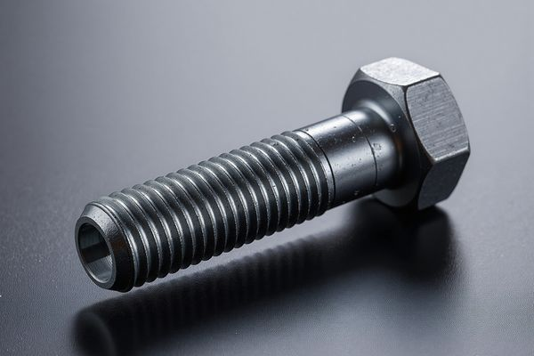
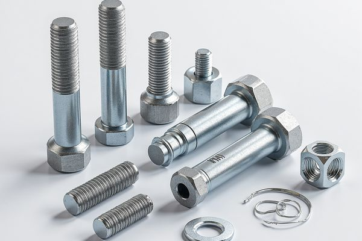
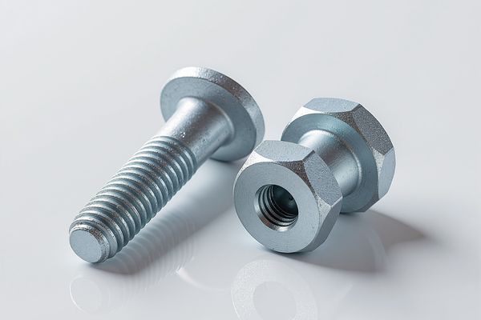
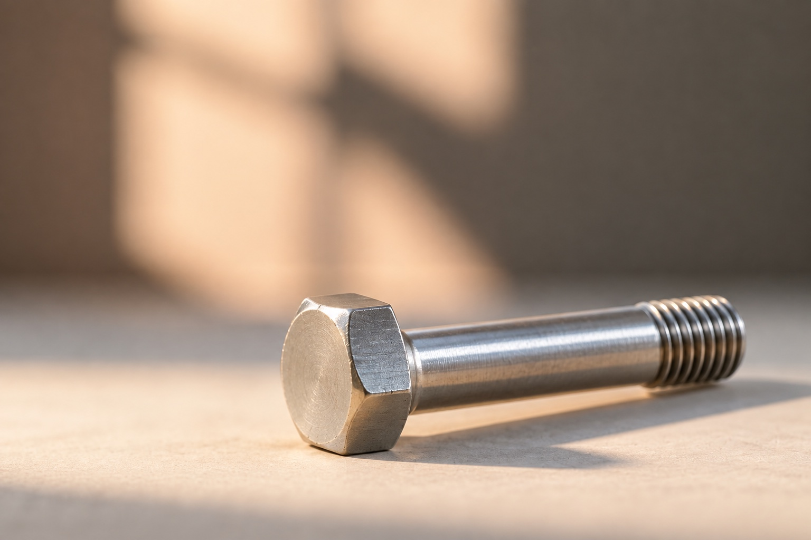
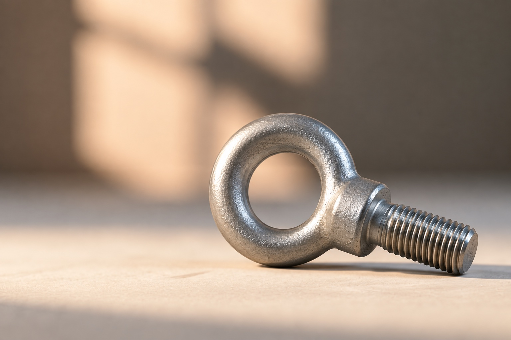

六角螺栓（半螺纹）
工业紧固件产品系列。材质、尺寸及表面处理根据您的需求确认。
六角螺栓、异型螺栓及地脚螺栓，可按结构连接和高强度应用浏览。
工业紧固件产品系列。材质、尺寸及表面处理根据您的需求确认。

工业紧固件产品系列。材质、尺寸及表面处理根据您的需求确认。

GB/T 32076.7
符合 GB/T 32076.7 的高强度六角螺栓，适用于钢结构预紧连接及重载应用。

GB/T 1231
符合 GB/T 1231 的高强度结构螺栓组件（螺栓 + 螺母 + 垫圈），用于钢结构预紧连接。

ASTM A325 / F3125
符合 ASTM A325 / F3125 的重型六角结构螺栓，用于北美标准项目钢结构连接。

图纸／规格要求
光杆提供定位配合面；杆径、配合及螺纹尺寸按图纸确认。
图纸／规格要求
特殊头型用于设备连接；订购前确认配合结构及应用要求。

图纸／规格要求
特殊头型用于设备连接；订购前确认配合结构及应用要求。
图纸／规格要求
外六角头带整体法兰；确认法兰直径、支承面与螺纹。
图纸／规格要求
圆头方颈结构；确认方颈尺寸与配合孔。
图纸／规格要求
弯制地脚螺栓；明确 L/J 形状、弯曲尺寸、埋入长度与外露螺纹。
| 产品 | 标准 | 规格参数 |
|---|---|---|
| GB/T 5782 六角头螺栓 | GB/T 5782 | 符合 GB/T 5782 的标准六角螺栓，广泛用于一般工程和结构连接。 |
| DIN 931 六角头螺栓 | DIN 931 / ISO 4014 | 符合 DIN 931（ISO 4014）的半螺纹六角螺栓，是国际上广泛采用的螺栓标准。 |
| DIN 933 全螺纹六角螺栓 | DIN 933 / ISO 4017 | 产品系列: DIN 933 全螺纹六角螺栓 尺寸与公差: 按图纸或双方确认的规格 材质: 碳钢、合金钢或不锈钢；选材需技术确认 |
| ISO 4014 六角头螺栓 | ISO 4014 | 符合 ISO 4014 国际标准的半螺纹六角螺栓，对应 DIN 931。 |
| GB/T 5783 全螺纹六角螺栓 | GB/T 5783 | 产品系列: GB/T 5783 全螺纹六角螺栓 尺寸与公差: 按图纸或双方确认的规格 材质: 碳钢、合金钢或不锈钢；选材需技术确认 |
| GB/T 32076.7 高强度六角螺栓 | GB/T 32076.7 | 符合 GB/T 32076.7 的高强度六角螺栓，适用于钢结构预紧连接及重载应用。 |
| GB/T 1231 结构螺栓组件 | GB/T 1231 | 符合 GB/T 1231 的高强度结构螺栓组件（螺栓 + 螺母 + 垫圈），用于钢结构预紧连接。 |
| ASTM A325 / F3125 结构螺栓 | ASTM A325 / F3125 | 符合 ASTM A325 / F3125 的重型六角结构螺栓，用于北美标准项目钢结构连接。 |
| 外六角铰制孔螺栓 | 图纸／规格要求 | 产品系列: 外六角铰制孔螺栓 尺寸与公差: 按图纸或双方确认的规格 材质: 碳钢、合金钢或不锈钢；选材需技术确认 |
| 方头／滑块螺栓 | 图纸／规格要求 | 产品系列: 方头／滑块螺栓 尺寸与公差: 按图纸或双方确认的规格 材质: 碳钢、合金钢或不锈钢；选材需技术确认 |
| 吊环螺栓 | 图纸／规格要求 | 产品系列: 吊环螺栓 尺寸与公差: 按图纸或双方确认的规格 材质: 碳钢、合金钢或不锈钢；选材需技术确认 |
| 六角法兰螺栓 | 图纸／规格要求 | 产品系列: 六角法兰螺栓 尺寸与公差: 按图纸或双方确认的规格 材质: 碳钢、合金钢或不锈钢；选材需技术确认 |
| 马车螺栓 | 图纸／规格要求 | 产品系列: 马车螺栓 尺寸与公差: 按图纸或双方确认的规格 材质: 碳钢、合金钢或不锈钢；选材需技术确认 |
| L 型与 J 型地脚螺栓 | 图纸／规格要求 | 产品系列: L 型与 J 型地脚螺栓 尺寸与公差: 按图纸或双方确认的规格 材质: 碳钢、合金钢或不锈钢；选材需技术确认 |